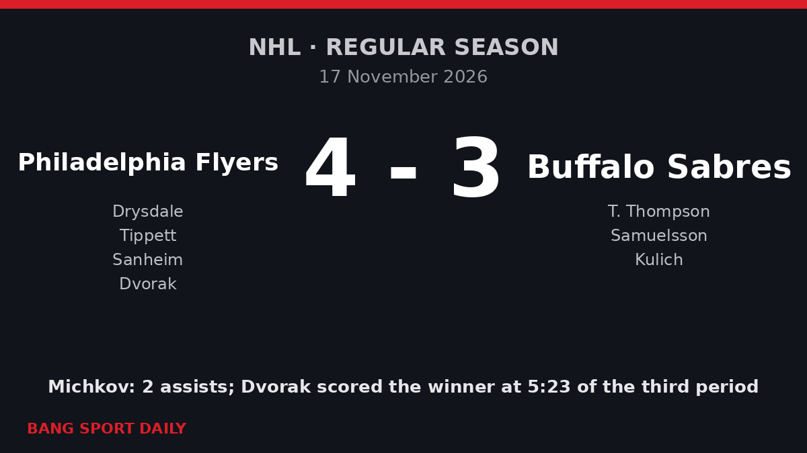

米奇科夫两次助攻帮助费城飞人4比3险胜布法罗军刀 连续得分场次增至五场
21岁的俄罗斯小将为杰米·德赖斯代尔和克里斯蒂安·德沃夏克的进球送出助攻，德沃夏克第三节的进球成为制胜球。

比赛经过
据美联社报道，2026年11月17日星期二，俄罗斯前锋马特维·米奇科夫送出两次助攻，帮助费城飞人在主场以4比3击败布法罗军刀，他的连续得分场次增至五场。
第二节6分39秒，米奇科夫助攻杰米·德赖斯代尔进球，将比分扳为1比1。随后欧文·蒂皮特在第二节破门，德赖斯代尔的传球穿过了布法罗多名防守球员。

第三节开局29秒，特拉维斯·桑海姆接克里斯蒂安·德沃夏克的横传破门，这是他本赛季第四个进球。据俄新社报道，德沃夏克在第三节5分23秒打进制胜球，将比分改写为4比3，米奇科夫为这粒进球送出助攻。
布法罗方面，泰奇·汤普森打进本赛季第13球并送出一次助攻，马蒂亚斯·萨缪尔森和伊日·库利赫也各进一球。
守门员
费城门将约瑟夫·沃尔完成16次扑救，布法罗门将亚历克斯·莱昂完成29次扑救。

现场
据NHL官方比赛技术统计，本场比赛在Xfinity移动球馆进行，现场观众18457人。据NHL官网报道，这场胜利后费城的战绩为7胜11负6加时负，近五场为3胜1负1加时负；布法罗的战绩降至8胜9负4加时负。
比赛意义
据美联社报道，米奇科夫成为自2001年的西蒙·加涅之后，首位在22岁前四次实现连续五场得分的飞人队球员。布法罗已连续五场不胜，其中四场在常规时间落败，一场在常规时间后落败。
下一步
费城将于周四在渥太华开始为期三场的客场之旅。布法罗将于周四在华盛顿继续本赛季最长的六连客之旅。